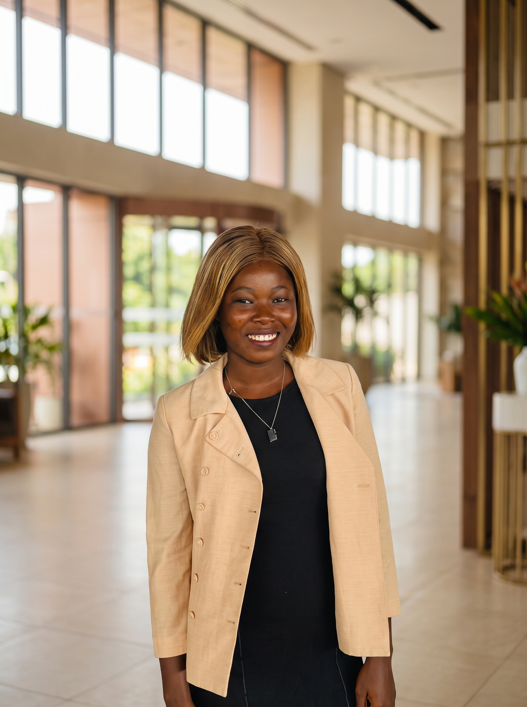

À propos
Un magazine indépendant et bilingue pour apprendre, partager et transformer.

Bienvenue dans LearnToBeAFeminist
Je suis Alvine Doumbia, féministe depuis quatre ans. Née dans une famille africaine et élevée dans un environnement profondément attaché aux valeurs chrétiennes, j’ai appris à interroger les traditions, les normes sociales et la place qu’elles accordent aux femmes.
En Afrique, le féminisme suscite encore des réticences, parfois parce qu’il est perçu comme étranger à nos réalités. Pourtant, les femmes africaines ont-elles moins de raisons de revendiquer l’égalité, simplement parce que leurs combats diffèrent de ceux des femmes d’ailleurs ?
Nos expériences sont multiples, façonnées par le genre, la classe sociale, la religion, l’origine et bien d’autres réalités. C’est pourquoi il est essentiel de comprendre le féminisme dans toute son intersectionnalité, sans réduire les expériences des femmes à une seule et même histoire.
Que vous soyez passionnée de féminisme, simplement curieuse ou farouchement opposée à ses idées, vous êtes la bienvenue ici. Apprenons, questionnons et comprenons ensemble.